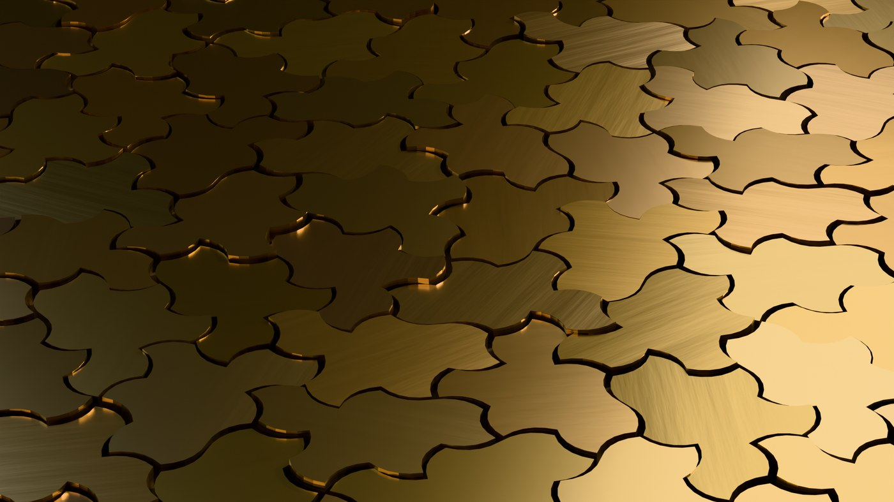

Materials and fabrication
From relief panels to STL toolpaths — one patch, many physical outputs.
One geometry, many outputs
A single generated patch exports as SVG for cutting, STL for printing, GLB for instancing, and CSV/JSON for custom toolpaths. One design becomes a relief panel, a printed texture, an instanced mesh, or a dataset of tile transforms — with identical geometry in each.[2][10]

The chirality result is a manufacturing feature, not a footnote: because Spectre tilings never need mirrored parts, one mold or die covers the entire surface.[2] Community fabrication files — OpenSCAD models, STLs with orientation grids, laser-cut outlines — are indexed in the bibliography and Resources and tools. Experimental Hat honeycombs and aperiodic composite panels demonstrate that these exports translate into measurable mechanical gains,[42][46][49] and deployable monotile kirigami shows how flat sheets fold into aperiodic surface structures.[51]
Directions
- Toolpath and infill experiments — aperiodic infill avoids the resonance planes of periodic infill
- Support-free printing studies, topology optimization, and surface finishing
- Architectural panels, molds, product surfaces, screens, and repeat-free decoration
- Three-dimensional topological interlocking assemblies built from identical aperiodic blocks[50]
- Origami-adjacent folding studies: flat-foldable synthesis environments show how computational tools explore fold-pattern spaces[26]; monotile kirigami extends this to deployable aperiodic sheets[51]
See also
Design, art, and architecture, Materials science and fluids
Categories: Applications